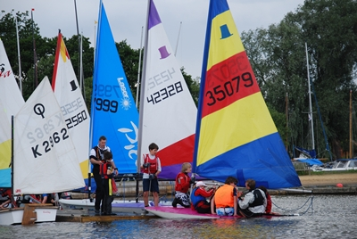

|
|
Junior Sailing Days  NEW FOR JUNIOR SAILING DAYS BOOKING AHEAD, NEW START TIME, LEVEL II Following last year’s successes in the Junior Sailing we are introducing a few new ideas. Firstly, having introduced the Stage I sailing cards last year, we are continuing this season with Stage II. The cards are a way of monitoring our juniors progress in their sailing ability by having a set number of tasks on each card with a box adjacent that a tutor can tick. On the completion of a card the junior sailor will receive a prize either at the relevant junior sailing day or on the last junior day of the season which brings me to the next change. It has been the tradition of the last 3 years to have games on the last day and I don’t see a need to change that as it has proved very popular, but what we hope to do is to expand on this by introducing a short junior club cruise (weather permitting).
Hickling Broad Sailing Club Juniors
are for ages 8 to 18 year olds who want to learn to sail. Club Juniors meet each month throughout the summer season. The junior days are aimed at introducing young people to the fun of sailing and dinghy racing. More experienced Juniors are encouraged to enter club races on Wednesday evenings or at the weekends. The junior days are run by volunteers, generally parents. We need all the help we can get! If you are an experienced helm or willing to help with rigging, launching, rescue boat duties please make contact with Tim Percival or any committee member. Junior days are free to members, you can come along and borrow a boat or use your own. Further details can be found by speaking to Tim or any committee member. As safety has to be a paramount consideration with this type of activity, there are, occasionally, some Junior days when we cannot sail due to adverse weather. If we feel the weather is too bad we can make the decision to cancel on the day.
Click For this years programme.
|
|||||||||||||